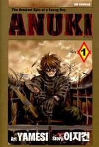

The MMM
Anuki

Alternative Name(s): The Greatest Epic of a Young Anuki
Author(s): Lee Ji Gun; Yamesi
Genres: Action, Adventure, Drama, Seinen
Release: 2001
Satus: Complete
Type: Manhwa
Length: 7 Volumes 51 Chapters
Read Online @:


More info @:

Notes
Between two warring countries there lies a meutral country where mercenary fighter pilots are trained to supply the other two countries. Anuki, who has a mysterious past inwich he is abandoned by his father, is the star pupil that both the countries are wanting.